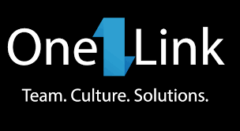
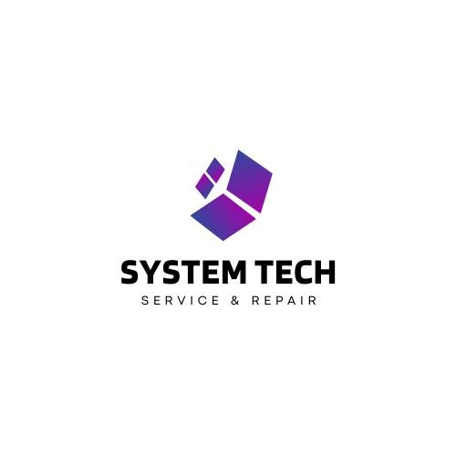

Soy estudiante de ingeniería en software de octavo semestre, con experiencia en redes, cámaras de video vigilancia, mantenimiento y armado de equipos de computo e impresoras.
Experiencie Laboral
SETTEQ

Horario de Atención
Abierto de a
Técnico instalador
Abril 2022 - Julio 2024
- Instalación y mantenimiento a equipos de CCTV, en áreas domésticas e industriales.
- Tendido de fibra óptica sobre postería, fusión de fibra óptica.
- Cableado estructurado, montaje de gabinetes, gestión de cableado y etiquetado.
- Diseño de redes mesh.
- Conocimiento de radiofrecuencias en equipos cambium.
- Montaje de torres arriostradas e instalación de equipos de radio frecuencia.
Office market
Técnico instalador y raparación de equipos
Octubre 2021 - abril 2022
- Armado de equipos de cómputo para uso empresarial ydoméstico.
- Mantenimiento preventivo de equipo de computo.
- Mantenimiento e instalación de impresoras.
- Mantenimiento a equipos de CCTV.
One Link
Asesor telefonico y soporte via llamada.
Mayo 2021 - Agosto 2021
- Asesor telefónico para la empresa AT&T.
- Soporte técnico sobre los dispositivos telefónicos por llamada.
- Atención al cliente.
SystemTech
Horario de Atención
Abierto de a
Empresa que estoy fundando junto con mi novia donde empleamos los conocimientos que tenemos hasta la actualidad.
- Armado de equipo de computo.
- Mantenimiento preventivo de equipo de computo.
- Diagnósticos y correcciones a equipos de computo.
- Respaldos y formateos a equipos de computo.
- Gestión de paqueteria office MacOS / Windows.